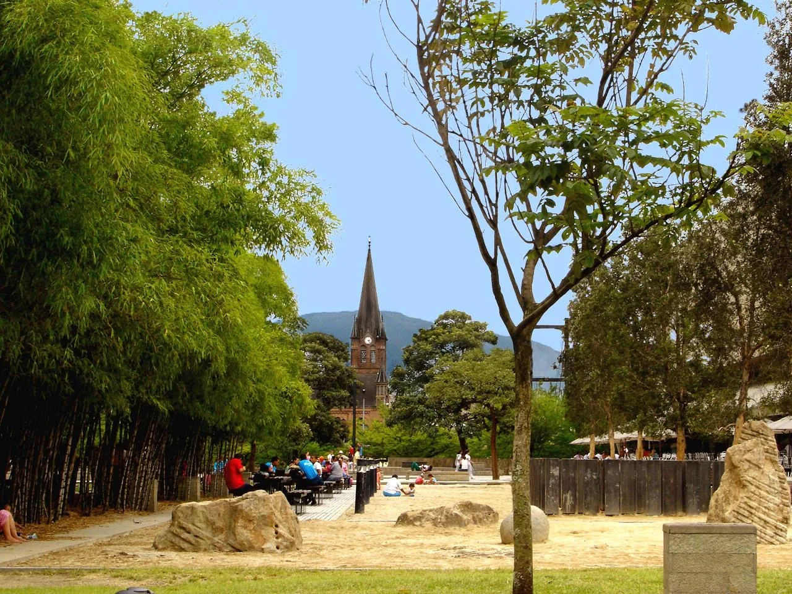
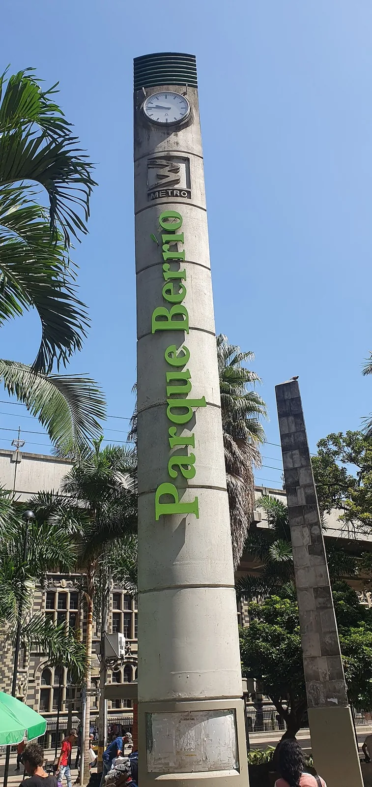

Una banca a la sombra permite esperar; retirarla cambia quién puede quedarse. Una acera continua facilita el paso; ocupar su único tramo accesible obliga a alguien a desviarse. La convivencia urbana empieza en decisiones de esta escala, donde un gesto y una condición material se encuentran. Hablar de urbanidad exige mirar qué posibilidades ofrece el espacio antes de pedir a todos el mismo comportamiento.
Ceder el paso importa, pero no repara un recorrido interrumpido. Mantener limpio un lugar ayuda, pero requiere dónde disponer los residuos y quién los recoja. La responsabilidad individual funciona dentro de una organización que puede facilitarla o frustrarla. Esa relación vuelve política una conversación que a menudo se reduce a buenos modales: permite discutir qué debe aportar cada persona y qué tienen que garantizar las instituciones.
Una regla de comportamiento puede parecer neutral y distribuir cargas desiguales. Exigir que un andén permanezca libre plantea un problema distinto a quien lo recorre que a quien depende de él para trabajar. Evaluar la regla exige conocer esas situaciones y las alternativas disponibles. La convivencia necesita criterios que puedan explicarse a las personas afectadas.
Compartir la ciudad exige admitir diferencias de horario, trabajo, apariencia y uso. Una norma tiene que resolver conflictos concretos sin convertir una forma de vida en la medida de todas las demás. El problema consiste en permitir que esas diferencias se encuentren y dispongan de procedimientos para discutir sus límites.


Esta distinción permite comprender por qué el urbanismo y la política no pueden separarse. La ubicación de una vivienda, la distancia hasta el trabajo, la disponibilidad de transporte, la calidad de una escuela y la existencia de un parque son decisiones que distribuyen posibilidades de vida. La planificación urbana no organiza únicamente edificios y vías: organiza oportunidades. Una ciudad puede proclamar la igualdad de sus habitantes y, al mismo tiempo, situar a unos cerca de los servicios y a otros a horas de distancia. La desigualdad deja entonces de ser una cifra abstracta y se convierte en cansancio, tiempo perdido, trayectos peligrosos y acceso limitado a la cultura.
El Informe urbano de América Latina y el Caribe 2024 de la CEPAL documenta una región que superó el 80 % de población urbana a mediados de la década de 2010, según las proyecciones que utiliza. La concentración de población hace especialmente relevante examinar cómo se distribuyen vivienda, movilidad y servicios, sin confundir una tendencia regional con la experiencia de cada ciudad. [1]
El espacio público es uno de los lugares donde estas diferencias se encuentran y se hacen visibles. Una plaza no es pública únicamente porque pertenezca jurídicamente al Estado. Su carácter público depende también de las posibilidades reales de uso, permanencia, acceso y expresión. Puede estar abierta y, sin embargo, resultar inaccesible para una persona con movilidad reducida; puede tener bancos y carecer de sombra; puede ser físicamente amplia y estar atravesada por controles que desalientan determinadas presencias. La condición pública no se agota en la propiedad. Se construye mediante el uso y la posibilidad de participar en la definición de ese uso.
La calle, en este sentido, es una institución sin edificio. Tiene reglas, jerarquías, acuerdos y conflictos. El peatón negocia con el automóvil; el comercio formal, con la venta ambulante; los residentes, con los establecimientos nocturnos; quienes buscan tranquilidad, con quienes necesitan expresar su música. No todos los conflictos pueden resolverse apelando a la tolerancia individual. Algunos requieren regulación, infraestructura, redistribución y decisiones públicas. Pedir cortesía a quien debe caminar por una vía sin andén no resuelve el problema de diseño. Exigir respeto por el espacio público sin reconocer las necesidades económicas de quienes trabajan en él tampoco basta.
El comercio callejero, por ejemplo, puede aportar vitalidad, proximidad y servicios a sectores que carecen de establecimientos formales suficientes. También puede generar conflictos por el uso de los andenes, la disposición de residuos, la movilidad y las condiciones de trabajo. La discusión no debería resolverse mediante una oposición moral entre orden e informalidad. Es necesario examinar qué actividades se desarrollan, quiénes dependen de ellas, cómo afectan a otros usuarios y qué alternativas existen. La urbanidad no se demuestra expulsando a quienes no encajan en una imagen ideal de la ciudad, sino encontrando acuerdos que reconozcan la pluralidad de sus habitantes.


La edad, la discapacidad y las tareas de cuidado cambian lo que se necesita de una calle. Una persona mayor puede requerir asientos; quien acompaña a un niño necesita tiempo para cruzar; alguien que utiliza silla de ruedas depende de la continuidad del recorrido. Proyectar para un peatón abstracto deja esas diferencias fuera de la evaluación. Escucharlas permite identificar ajustes concretos.
La participación ciudadana debería servir para hacer visibles esas dimensiones. Pero participar no consiste solamente en asistir a reuniones o responder encuestas. Requiere información comprensible, capacidad de deliberación, posibilidad de influir en las decisiones y mecanismos para conocer sus resultados. Cuando la participación se convierte en una formalidad que legitima decisiones ya tomadas, pierde su sentido democrático. Una comunidad tampoco puede asumir por sí sola responsabilidades que corresponden a las instituciones. La corresponsabilidad no debe convertirse en una manera de trasladar obligaciones públicas a los ciudadanos sin recursos ni capacidad de decisión.
El recorrido cotidiano puede atravesar varios municipios: vivienda en uno, trabajo o cuidados en otro. Por eso, algunas mejoras dependen de acuerdos entre administraciones. Un trayecto accesible que se interrumpe al cambiar de jurisdicción sigue siendo un trayecto incompleto. La coordinación forma parte de las condiciones materiales con las que se pide convivir.
La responsabilidad se puede discutir a partir de tareas identificables. La administración debe ofrecer y mantener un recorrido utilizable; quienes lo comparten necesitan reconocer el paso de otras personas. Una obligación no absorbe la otra. Precisar qué corresponde a cada actor permite evaluar un incumplimiento sin atribuir toda dificultad al comportamiento individual.
Una banca, un cruce o un lugar de venta condensan decisiones sobre quién puede quedarse y bajo qué condiciones. Su calidad pública se reconoce también en la posibilidad de revisarlas: escuchar a quienes usan el lugar, explicar las reglas y comprobar sus efectos. La convivencia requiere esos procedimientos además de una infraestructura que permita ejercerla.
Fuentes.
Ensayo de interpretación política y urbana. Las escenas de apertura son situaciones hipotéticas, no observaciones de campo. La referencia regional no describe un caso local ni acredita resultados de seguridad.
Fuentes consultadas el 13.11.2026. Interpretación y edición: RUMMOR. Edición de prueba para revisión.